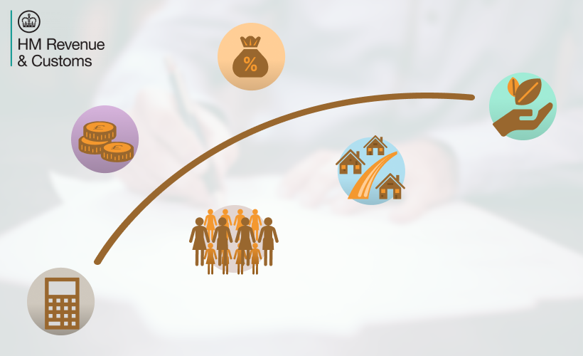
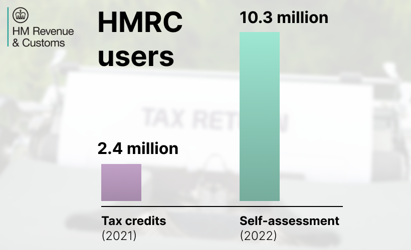
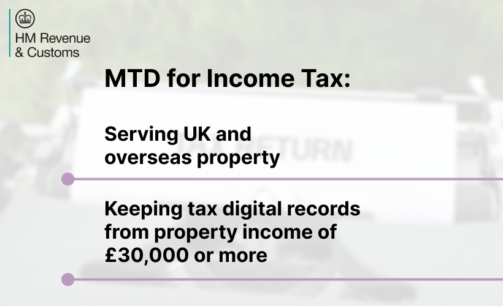
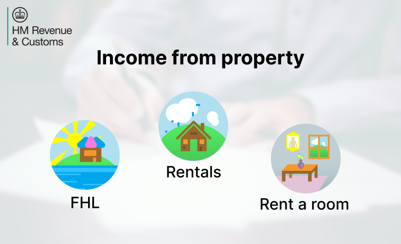
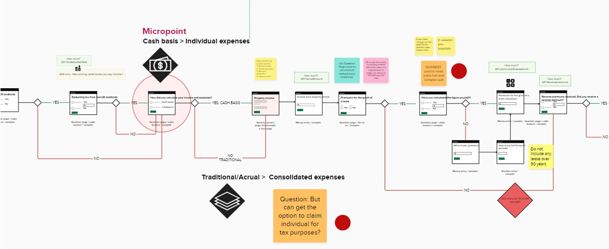

- Client:
- His Majesty’s Revenue and Customs (HMRC)
- Project(s):
- Make Tax Digital (MTD) for Property Income Tax Submission.
- ARS - Advanced Ruling Service.
- Role:
- Mostly user interface designer and user experience designer.
Some user research and service design.
About the project(s)
As part of the UK government’s initiative to digitise tax reporting, I contributed to the Make Tax Digital (MTD) for Property Income Tax Submission project. The goal was to streamline the process for landlords and property owners, ensuring a seamless and efficient way to report income tax digitally.
The Advanced Ruling Service (ARS) is a key initiative aimed at providing businesses and individuals with clear, binding tax rulings before transactions take place. This service helps taxpayers gain certainty on complex tax matters, minimising risks and ensuring compliance with regulations.
About His Majesty’s Revenue and Customs (HMRC)
His Majesty's Revenue and Customs (HRMC) is a non-ministerial department, supported by two agencies (Valuation Office Agency and The Adjudicator's Office ) and public bodies.
HMRC was established by an Act of Parliament in 2005 as a new department, replacing the Inland Revenue and Customs & Excise.
Its purpose is to collect money to pay for public services and provide financial support.
An HMRC-themed image illustrating tax concepts. Source background image by Scott Graham on Unsplash
HMRC assisted 2.4 million customers in renewing their tax credits in 2021 and supported 10.3 million customers in completing their Self Assessment returns.
This government organisation also supports more than 12 million children with Child Benefit and 458,000 through Tax-Free Childcare.
HMRC puts the focus on prioritising essential customer services and building a modern tax and customs department since this will potentially ensure tax compliance.
An HMRC-themed image illustrating statistics about tax credits and self-assessment. Source background image by Photo by Markus Winkler on Unsplash
Making Tax Digital for Income Tax (MTD) is part of the government’s Tax Administration Strategy which is trying to reduce the tax gap * by requiring businesses and individuals to:
- Keep digital records.
- Use software that works with Making Tax Digital.
- Submit updates every quarter, bringing the tax system closer to real-time.
MTD for Income Tax is due to be introduced in April 2026 and will affect self-employed individuals and individuals receiving property income with annual gross income of £30,000 or more.
HMRC MTD key facts. Source background image by Scott Graham on Unsplash
Thus, I was invited to the MTD for Income Tax project to work on the income property journey (UK and International for FHL (Furnished Holiday Lettings), Rentals and Rent a room).
Self-employed individuals and individuals must inform HMRC of the property income even if they are making a loss from a property and pay tax on the net rental profit only. This applies to all rental income and expenses including lettings on UK and overseas properties.
This meant that these journeys were long and complex due to the accounting/tax nature and law requirements, involving a lot of strategic thinking, user interface and content design work. User experience is critical for effective Self Assessment tax returns.
HMRC MTD key facts. Source background image by Scott Graham on Unsplash
What did my UX and UI practice look like?
Digital income tax submission has different dimensions and I was invited to work on the income property journey (UK and International for FHL (Furnished Holiday Lettings), Rentals and Rent a room), where I created and edited pages, linked journeys, looked at background research and performed not just an user interface role but also contributed with my user experience (UX) expertise background by selecting and understanding what GDS components and patterns would be more suitable to serve the user.
- Setting up the technical environment necessary to code and connect the local changes on my machine to the repository.
- To create pages (more than 25) and link pages together on my machine and upload them to the GOV MTD Income Tax property template repository on GitHub using Command Prompt (CMD), HMTL and Nunjucks code.
- Update the content and error messages kept in Confluence in each of the pages.
- Understand the Business Analyst (BA) user flow maps created in Mural and translate the changes into pages on the prototype.
- Redesign user flow maps using standards set by the team so they could be understood by everyone. Attend a set number of mandatory meetings, such as:
-
- UR Community
- BA Team Meeting
- Monthly Write up
- Interaction Design and Content
- Show and Tell
- Check in Weekly with UR leads
- BA community meeting
- Due to UX skills, to contribute with strategic thinking for the user experience redesign.
Deliverables from the HMRC project. User flow maps and collaborative boards created in Mural.
My work involved designing and optimising user-friendly digital solutions that aligned with HMRC’s compliance requirements with focus on the people and GDS standards. I analysed user needs, pain points, and regulatory constraints, ensuring the platform provided an intuitive and accessible experience.
My role in this project involved mapping the end-to-end user journey, identifying key decision points, and improving the overall user experience.

Deliverables from the HMRC project. User flow diagrams with GOV.UK GDS user flow page patterns.
I collaborated with stakeholders to ensure the system was transparent, responsive, and easy to navigate. The service needed to accommodate diverse user needs, from large enterprises to individual taxpayers, making accessibility and clarity a priority.
- Conducted user experience research to identify challenging landing pages, analyse traffic patterns, and understand user behaviour, uncovering opportunities for improvement.
- Developed user flow diagrams, empathy maps, and page patterns aligned with the UK Government Digital Service (GDS) Design System.
- Updated online prototypes using the GOV.UK Prototype Kit, GitHub repository, and Nunjucks, ensuring seamless integration of user insights.
- Worked efficiently with complex GitHub repositories to swiftly implement content and design updates based on user testing workshop findings.
Deliverables from the HMRC project. Sample prototype pages.
Read more case studies